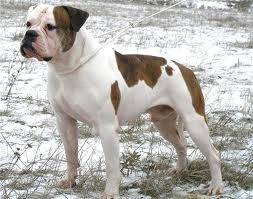

Американський бульдог — це міць, характер і безкомпромісність. Зрозуміло, такий собаці потрібен сильний і впевнений у собі господар, готовий серйозно займатися її вихованням. Купуючи цуценя американського бульдога, ви набуваєте не тільки задоволення від спілкування та ігор з собакою, але й серйозну відповідальність.
Взагалі, американський бульдог чудово піддається дресируванню, але у цього пса вельми впертий характер, тому від вас потрібно чимала наполегливість і рішучість. Зате, якщо собака засвоїла команду, то вона пам’ятатиме її все життя. Американському бульдогові з дитинства потрібно давати можливість спілкуватися з іншими тваринами і людьми. Справа в тому, що ці собаки відчувають вроджене недовіру до тих, кого вони вважають чужими. По відношенню до інших собак американський бульдог буде завжди прагне зайняти домінуючу позицію.
Зовні сучасний американський бульдог — це мускулиста, сильна, рухлива собака середнього зросту. Про цю породу часто кажуть — «бульдог бульдогів». Вважається, що американський бульдог, як ніхто, зберіг у собі риси перших бульдогів, виведених в Англії кілька століть тому. В Америці ці собаки з’явилися разом з першими переселенцями з Англії. Справжню популярність американський бульдог завоював в 80 -х роках 20 століття, і в подальшому отримав поширення у всьому світі.
Спочатку американський бульдог був виведений як робоча порода. Величезною популярністю користувалися бої американських бульдогів з биками. У результаті вийшла універсальна собака з чудовими якостями — з високим інтелектом, відмінним нюхом, прекрасно навчається і дуже витривала.
Собак породи американський бульдог використовують як надійних охоронців, сторожів, охоронців, а, головне, прекрасних компаньйонів. Ставши на захист свого господаря, американський бульдог буде битися до останнього, за свою сім’ю він здатний віддати життя.
Види, стандарти і різновиди
Сьогодні відомі два різновиди цієї породи — класична (тип Джонсона) і стандартна (тип Скотта). Обидва різновиди в рівній мірі мають право носити горде ім’я американського бульдога. Їх зовнішні відмінності пояснюються різними призначенням цих собак.
Собаки класичного типу відрізняються короткою мордою, потужним статурою і прекрасними охоронними характеристиками.
Стандартний тип — це більш легкі, атлетично складені собаки, з витягнутою мордою, вони особливо хороші в переслідуванні. Однак більшість собак все ж являють собою змішаний тип.
Вибір цуценя американського бульдога
Купуючи цуценя американського бульдога, для початку необхідно визначитися в якій якості ви бачите свого вихованця. Чи буде він просто компаньйоном, другом, членом сім’ї, або ж чемпіоном і зіркою рингу ? Від цього залежатимуть характеристики цуценя і, відповідно, ціна. Однак, в будь-якому випадку собака повинна бути породистої, тому краще звернутися в розплідник або до професійного заводчику.
Іноді під виглядом цуценят від «елітних» батьків недобросовісні заводчики продають помісь боксера з пітбулем або стафа з англійським бульдогом, які часто схожі з американським бульдогом тільки забарвленням. Хороший заводчик завжди надасть вам документальне підтвердження родоводу і титулів батьків.
У гонитві за прибутком деякі заводчики в’яжуть суку кожну течку. Це негативно позначається як на здоров’я суки, так і на якості потомства. Достовірну інформацію про в’язках ви зможете отримати в клубі породи.
Оптимальний вік для покупки щеняти — не менше 1,5 місяців. Вага цуценя американського бульдога в цьому віці становить 5-6 кг. При сильних відхиленнях за цим параметром від покупки такого цуценя слід відмовитися. Занадто маленький вага свідчить про неправильне вирощуванні цуценя, занадто великий в майбутньому може обернутися проблемами в екстер’єрі, так як під дією зайвої ваги відбувається деформація ще незміцнілих кісток. Хороший щеня костистий, у нього велика голова, широка морда. Шерсть повинна бути блискучою, очі — ясними, вуха — чистими.
Особливістю породи американський бульдог є те, що деякі щенята можуть бути неактивні і малорухливі. Це не є пороком і з віком проходить.
Сьогодні будь-який поважаючий себе клуб обов’язково таврує все поноси. При купівлі щеняти ви отримаєте щенячью картку і ветеринарний паспорт з відмітками про щеплення. Особисте клеймо цуценя, зазвичай розташоване в паху або в вусі, має збігатися з відміткою в отриманих документах.
Особливості утримання, догляд, здоров’я
Американський бульдог — собака, яка не потребує особливого догляду. Купати бульдога слід не частіше двох разів на рік. Шерсть необхідно періодично вичісувати щіткою з натуральною щетиною. Очі і вуха у міру забруднення протирають спеціальними рідинами, які можна знайти в будь-якому зоомагазині. Кігті підстригають секатором.
Американському бульдогові необхідні фізичні навантаження і тривалі прогулянки. Але майте на увазі, що тривалість прогулянки вимірюється не в годинах, а в кілометрах, які ви пройдете разом з вихованцем за час прогулянки.
Особливості в’язки американського бульдога
Приймаючи рішення про в’язанні вихованця, важливо пам’ятати, що метою заводчика, в першу чергу, є поліпшення і збереження племінної лінії, а не заробляння грошей. Необхідно серйозно підходити до вибору партнера для вашого вихованця, щоб не допустити виродження.
Фізичне формування організму американського бульдога повністю завершується лише до 2-3 років, тому не рекомендуються ранні в’язки. Згідно з положенням Російської кінологічної федерації американських бульдогів, в’язка і сук і псів дозволено з 18 -місячного віку.
Тічка у сук американського бульдога буває, як правило, раз на півроку і триває в середньому 21 день.
Дресирування американського бульдога
Починати дресирувати американського бульдога необхідно з першого ж дня його перебування в будинку. Слід відразу позначити для цуценяти правила поведінки в будинку і норми спілкування з членами сім’ї.
Нижче наведено список основних заборон для нормального вихованого американського бульдога. На ваш розсуд цей список може бути розширений забороною на лежання на дивані або яким-небудь іншим.
1. Собаці заборонено кусати господаря при будь-яких обставин. Ви повинні бути непохитні — вкусила чи вас собака в грі або висловлюючи невдоволення чим-небудь. У будь-якому випадку за укусом повинне піти покарання. Візьміть нахабу за шкірку і підніміть. Ваші дії повинні супроводжуватися доганою. Не так важливо, що ви будете говорити, важливо яким тоном. Необхідно не кричати, але говорити впевненим і незадоволеним тоном. Коли ви побачите смиренність в очах цуценя, обов’язково продовжите гру або, якщо конфлікт стався під час проведення будь-яких необхідних процедур (витирання лап, чищення вух, очей), доведіть справу до кінця і похваліть вихованця.
2. Собаці заборонено тягнути поводок. Американський бульдог — собака, що володіє величезною силою. Щоб уникнути неприємностей, необхідно, щоб цуценя ще в дитинстві усвідомив це правило. Заохочуйте вихованця, якщо він смирно слід за вами ; привчайте цуценя міняти темп руху і зупинятися разом з вами. Будь-який прояв самостійності необхідно припиняти командою і ривком повідця.
3. Собаці заборонено спиратися передніми лапами на людей. Американський бульдог — не тільки сильна, але і велика собака. Ставши на задні лапи, дорослий пес зможе покласти передні на плечі досить високої людини. Чоловік встоїть, а от дитину або жінку величезний пес просто повалить. Тому не дозволяйте цуценяті стрибати на вас, навіть якщо він висловлює радість чи вітає когось з людей. Будь-які подібні дії необхідно припиняти командою і обсмикуванням повідця або смикнувши собаку за шкірку. Домігшись розуміння, приголубте вихованця.
4. Собаці заборонено піднімати їжу з підлоги або землі. Американські бульдоги відрізняються відмінним здоров’ям, однак, кістка з смітника — не найкраща їжа для вихованця. Бульдожка дозволено їсти з миски, з рук господаря або на своєму місці. Бажання підняти що-небудь їстівне з підлоги або землі необхідно припиняти командою і механічним впливом, наприклад, ривком повідка. Якщо собака не на повідку, киньте в неї чимось (тапком, пластиковою пляшкою).
5. Собаці заборонено битися з іншими собаками ! Американські бульдоги неагресивні і впевнені в собі. Вони не стануть просто так кидатися на побратимів. Однак, за відсутності належного виховання, навіть благородний бульдог може почати задиратися і ініціювати бійки. Не допускайте, щоб ваш вихованець гарчав або огризався на інших собак. Краще, якщо в коло його спілкування входитимуть дружелюбні собаки, або представники протилежної статі. Не провокуйте свого Бульдожка : не варто у присутності свого вихованця грати з чужою собакою, або грати однією іграшкою одночасно з двома собаками.
Розплідники і клуби
Популярність породи американський бульдог давно вийшла за межі Америки. Великі центри по племінного розведення цієї породи розташовані в Росії, Данії, Угорщини. До Росії перші американські бульдоги були завезені на початку 90 -х років 20 століття. Великий досвід російських фахівців дозволяє виводити якісне потомство, що витримує світові стандарти.